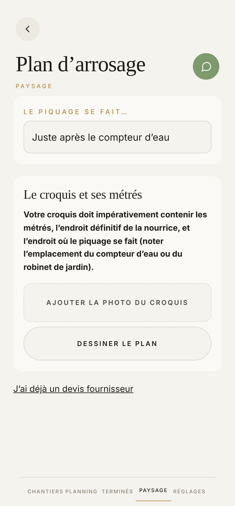
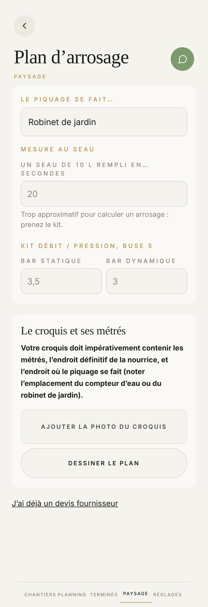
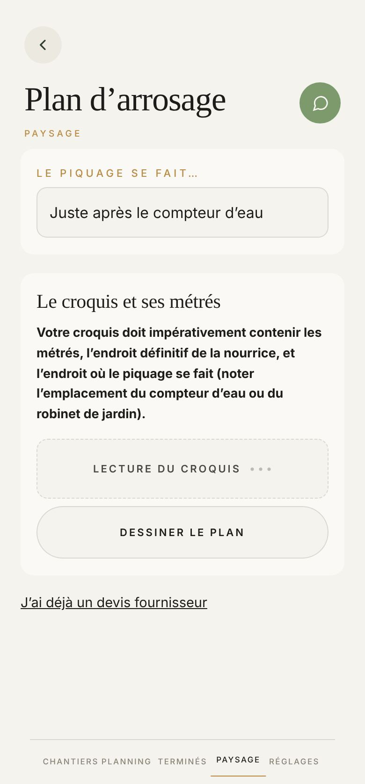
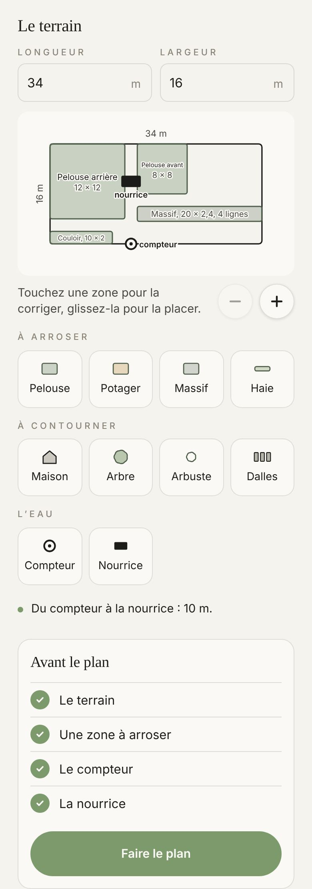
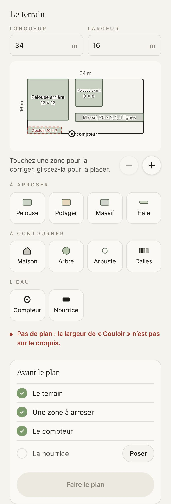
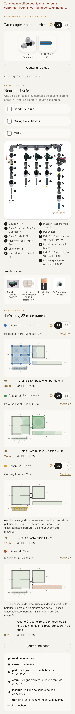
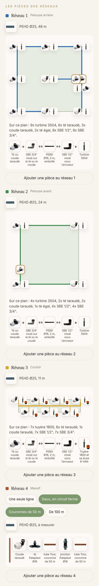
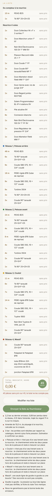
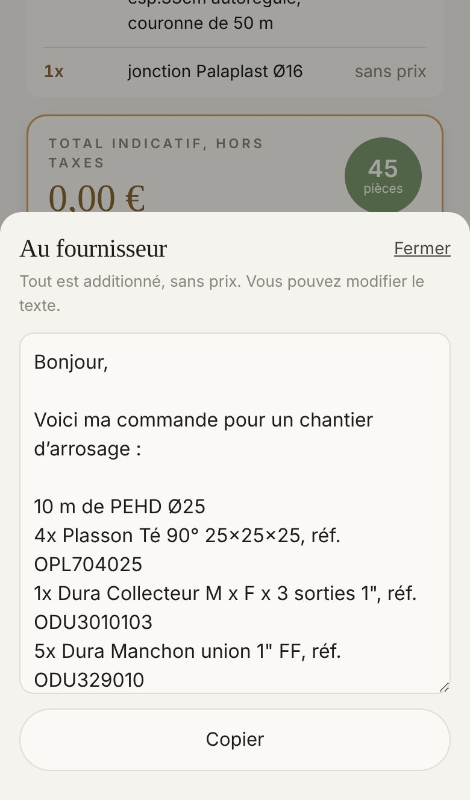

Réseau 1
Pelouse arrière, 12 m sur 12 m
- 9xTurbine 3504 buse 0,75, portée 5 m
- 48 mde PEHD Ø25
De la photo du croquis à la commande : les mêmes écrans, dans le même ordre, qui se lisent au soleil. Le plan se parcourt par cinq mots collés en haut, et la liste part au fournisseur sous le pouce.
Proposé
Aujourd'hui








